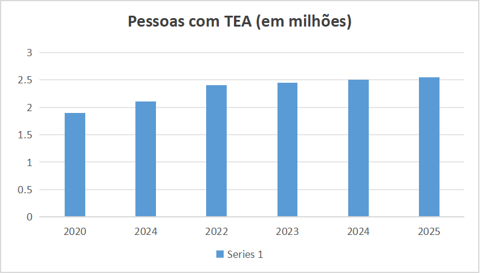

Perfil das pessoas com TEA no Brasil
De acordo com o Censo 2022 do IBGE, o Brasil tem cerca de 2,4 milhões de pessoas diagnosticadas com Transtorno do Espectro Autista (TEA)
- Número total: Aproximadamente 2,4 milhões de pessoas, o que equivale a cerca de 1,2% da população.
- Faixa etária: A prevalência é maior em crianças e adolescentes:
- 5 a 9 anos: 2,6%
- 0 a 4 anos: 2,1%
- 10 a 14 anos: 1,9%
- 15 a 19 anos: 1,3%
- Gênero: Homens são a maioria dos diagnosticados.
- Região: A região Sudeste concentra o maior número absoluto de pessoas autistas.
- Cor ou raça: Embora os dados do Censo 2022 apontem uma prevalência maior entre pessoas brancas (1,3%), o IBGE ressalta que essa diferença pode não ser totalmente representativa e pode indicar subnotificação em outros grupos.
Desafios e oportunidades
- Educação: A taxa de escolarização entre pessoas com TEA é superior à da população geral. No entanto, mais de 46% das pessoas autistas adultas estão sem instrução ou com o ensino fundamental incompleto.
- Atendimento: O aumento do número de diagnósticos no país gera uma urgência para a criação de mais políticas públicas e programas de formação técnica para profissionais que possam atender essa população.
